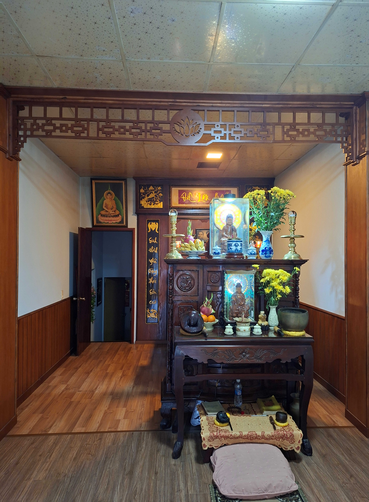

NHÀ THỜ GIA ĐÌNH PHAN ĐỨC TẠI ĐÀ NẴNG

Không gian thờ tự tâm linh của gia đình tại K93/01 Hải Phòng, Đà Nẵng
Nhà thờ được sự thống nhất của các anh chị em, xây dựng trên mảnh đất diện tích 60m², là một phần của ngôi nhà tại số K93/01 đường Hải Phòng, Đà Nẵng. Từ thời kỳ trước giải phóng và giai đoạn từ sau năm 1975 đến 1997, nơi đây đã được chọn làm nơi thờ phụng Tổ tiên (được dời từ số K93/04 sang).
Ngôi nhà thờ được thiết kế với cấu trúc 2 tầng: Tầng trên dành riêng cho việc thờ phụng trang nghiêm, tầng dưới được sử dụng làm không gian tập trung cho con, cháu về sum họp mỗi dịp giỗ, kỵ. Công trình hiện tại được khởi công vào ngày 16/2 Âm lịch năm Giáp Thìn (tức tháng 03/2024) và chính thức hoàn thành vào ngày 16/3 Âm lịch.
Kinh phí xây dựng: Tổng kinh phí thực hiện là 100 triệu đồng, được đóng góp từ tâm huyết của các thành viên: Phan Đức Thắng, Phan Thị Hà và Phan Đức Văn.
I. HỆ THỐNG THỜ PHỤNG
Đối tượng thờ phụng: Nơi thờ tự từ đời Ông cố Phan Đức Hinh trở xuống đến đời con, đời cháu của ông Phan Đức Thương.
Bố trí bàn thờ: Bàn thờ cố định bao gồm 07 bát nhang, được sắp xếp theo tôn ti trật tự:
- 03 bát hương thờ Ông Bà Cô, Ông Bà Nội.
- Hàng sau gồm: 02 bát hương Cha Mẹ và 02 Chú.
- 01 bát hương dành cho Anh Chị Em trong gia đình.
- 01 bát hương dành cho các Cháu.
* Ghi chú: Đối với bát hương Anh Chị Em và các Cháu, nếu có người mất tại nhà thờ thì sau 03 năm sẽ được làm lễ nhập chung vào bát hương chính.